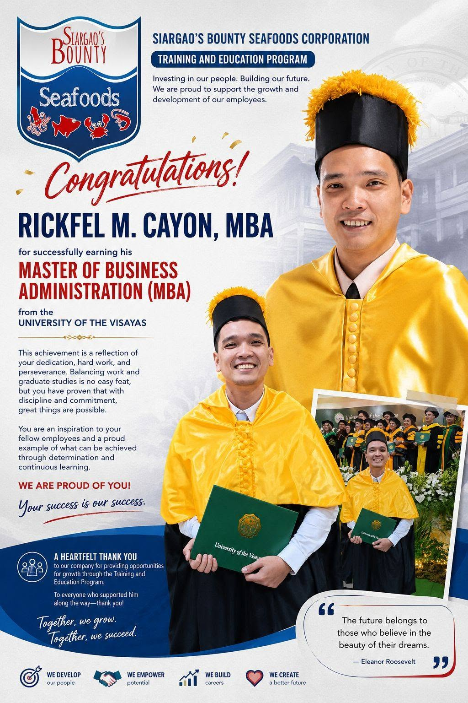

MBA Achievement
Congratulations, Mr. Rickfel M. Cayon, MBA! 🎓
We are proud to celebrate the remarkable achievement of our very own Mr. Rickfel M. Cayon, MBA, who has successfully earned his Master of Business Administration (MBA) from the University of the Visayas! 🎓
This milestone is a reflection of Mr. Rickfel's dedication, perseverance, discipline, and commitment to continuous learning and professional growth. Balancing the demands of work and graduate studies takes determination. And today, we celebrate the result of that hard work.